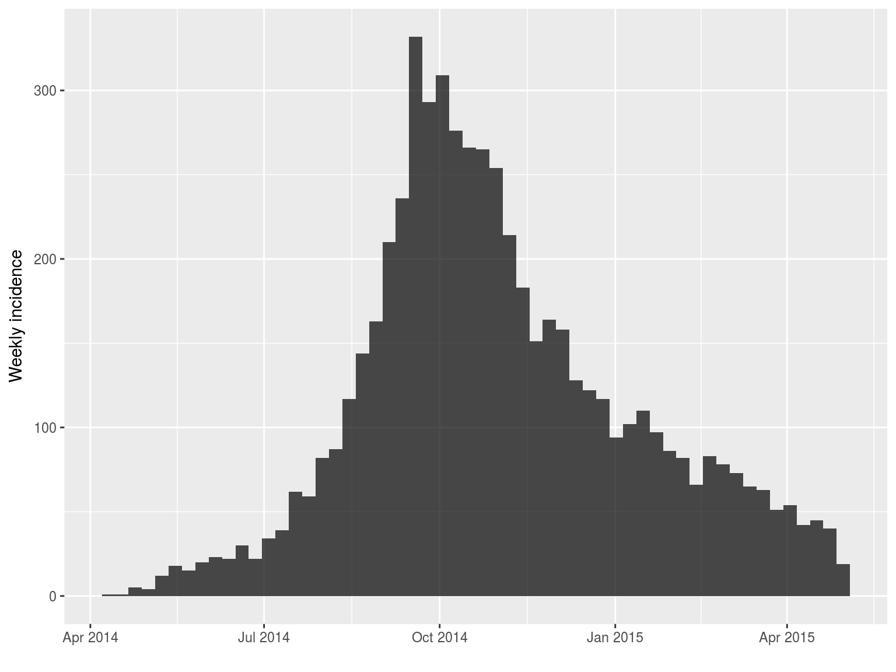
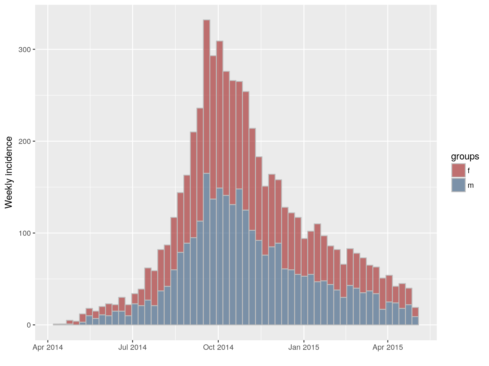
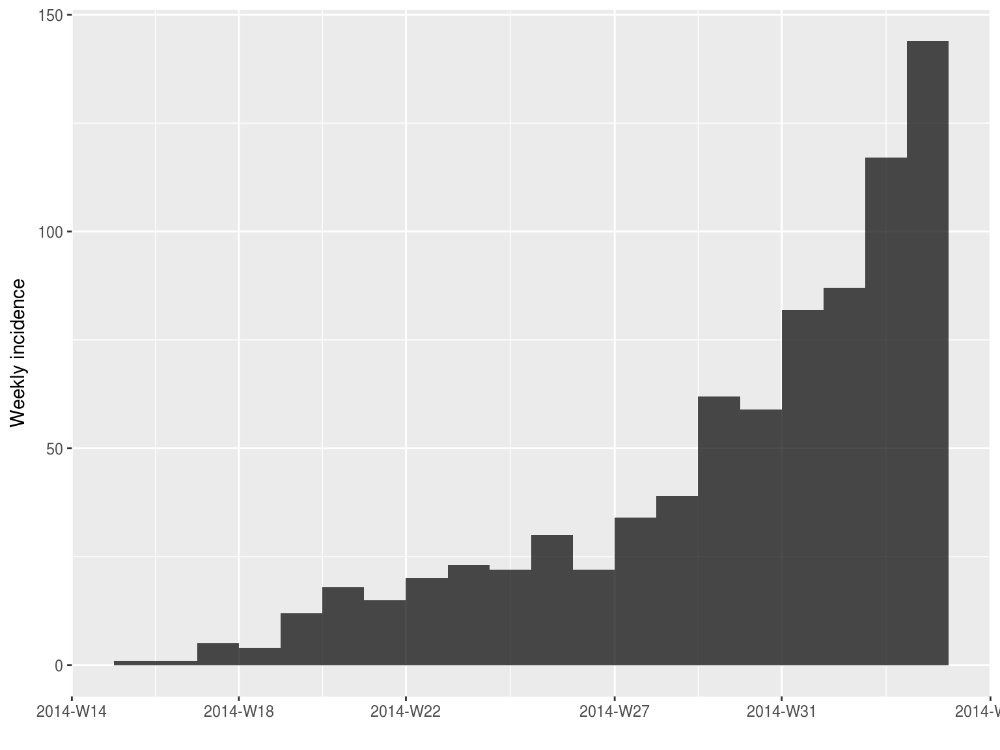
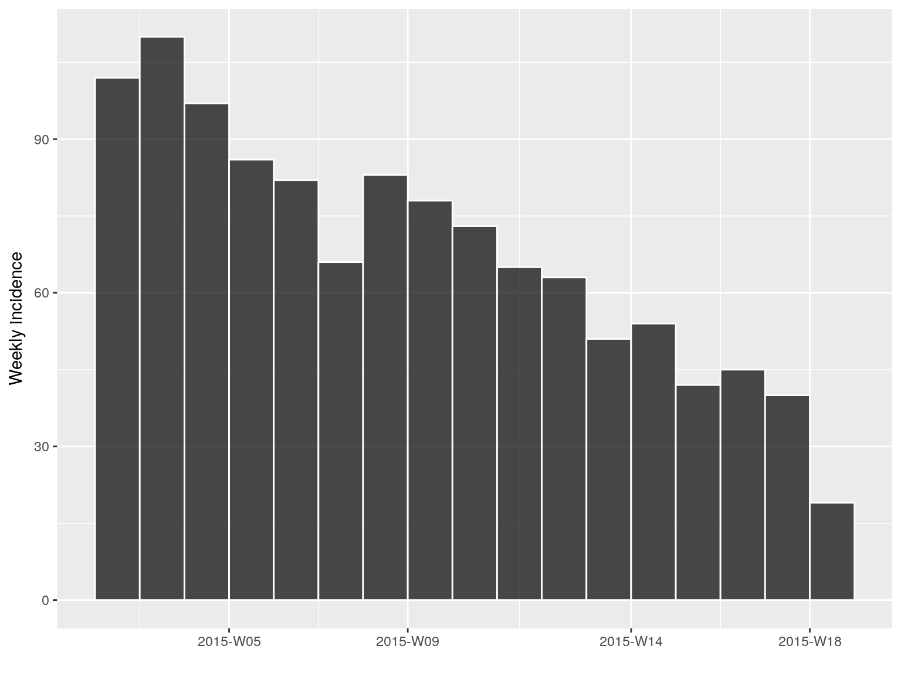
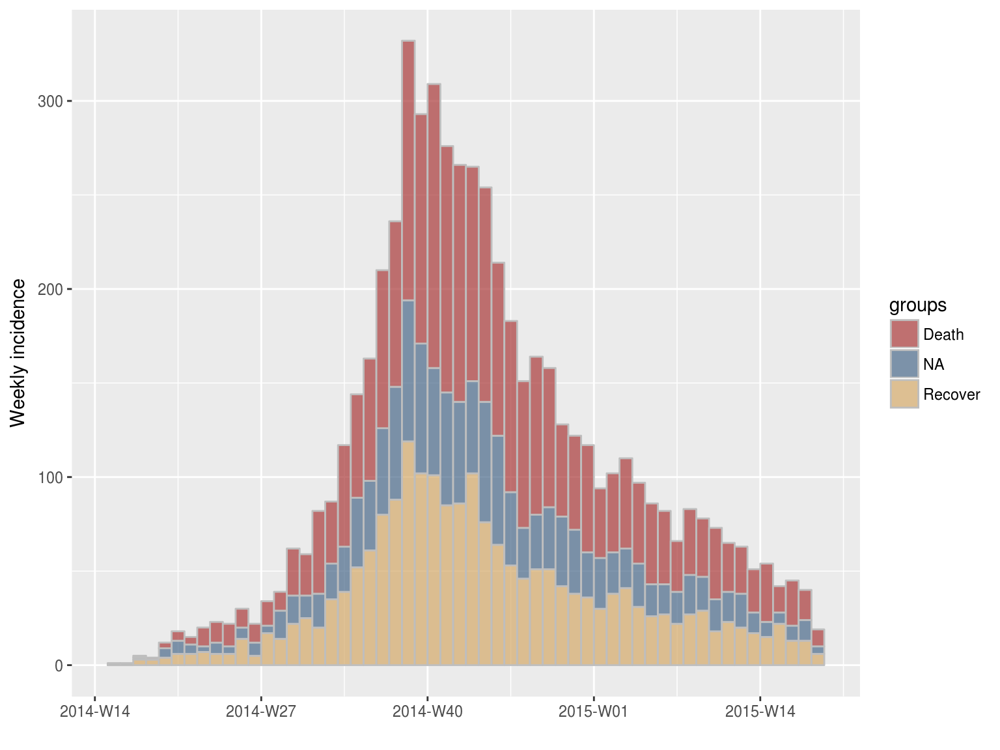
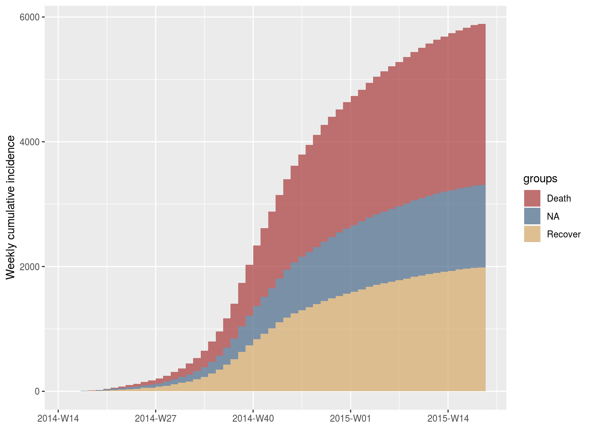
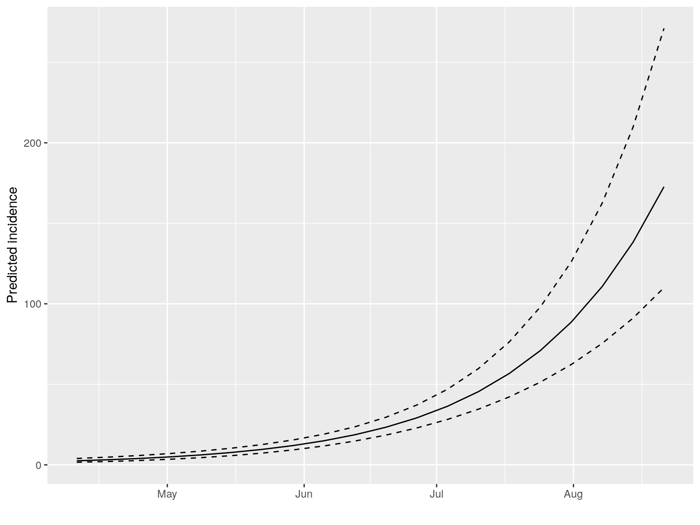
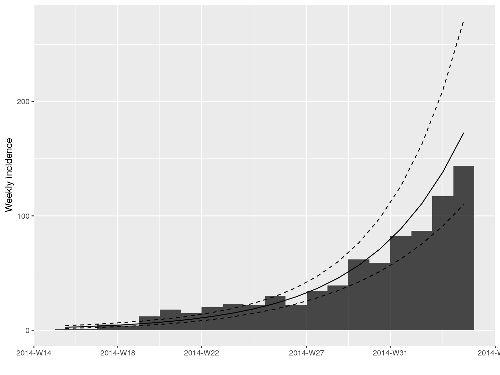
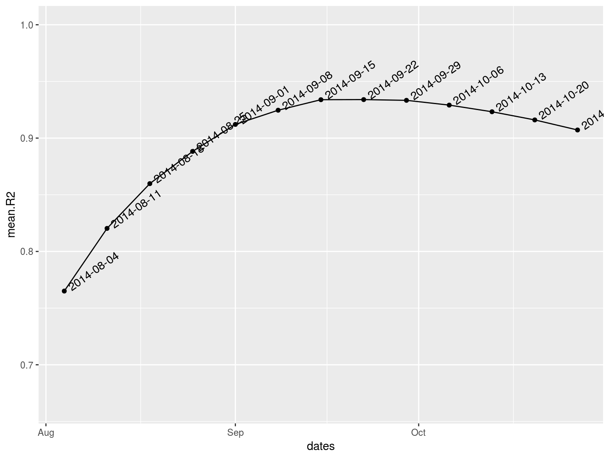
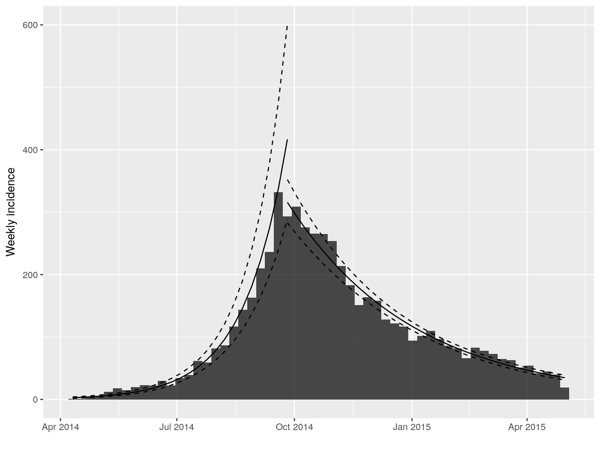

To install the current stable, CRAN version of the package, type:
install.packages("incidence")To benefit from the latest features and bug fixes, install the development, github version of the package using:
devtools::install_github("reconhub/incidence")Note that this requires the package devtools installed.
What does it do?
The main features of the package include:
incidence: compute incidence from dates in various formats; any fixed time interval can be used; the returned object is an instance of the (S3) class incidence.plot: this method (see?plot.incidencefor details) plots incidence objects, and can also add predictions of the model(s) contained in an incidence_fit object (or a list of such objects).fit: fit one or two exponential models (i.e. linear regression on log-incidence) to an incidence object; two models are calibrated only if a date is provided to split the time series in two (argumentsplit); this is typically useful to model the two phases of exponential growth, and decrease of an outbreak; each model returned is an instance of the (S3) class incidence_fit, each of which contains various useful information (e.g. growth rate r, doubling/halving time, predictions and confidence intervals); results can be plotted usingplot, or added to an existinguncudenceplot using the piping-friendly functionadd_incidence_fit.fit_optim_split: finds the optimal date to split the time series in two, typically around the peak of the epidemic.[: lower-level subsetan of incidence objects, permiting to specify which dates and groups to retain; uses a syntax similar to matrices, i.e.x[i, j], wherexis the incidence object,ia subset of dates, andja subset of groups.subset: subset an incidence object by specifying a time window.pool: pool incidence from different groups into one global incidence time series.cumulate: computes cumulative incidence over time from andincidenceobject.as.data.frame: converts an incidence object into adata.framecontaining dates and incidence values.bootstrap: generates a bootstrapped incidence object by re-sampling, with replacement, the original dates of events.find_peak: locates the peak time of the epicurve.estimate_peak: uses bootstrap to estimate the peak time (and related confidence interval) of a partially observed outbreak.
Resources
Vignettes
An overview of incidence is provided below in the worked example below. More detailed tutorials are distributed as vignettes with the package:
Websites
The following websites are available:
The official incidence website, providing an overview of the package’s functionalities, up-to-date tutorials and documentation:
https://www.repidemicsconsortium.org/incidenceThe incidence project on github, useful for developers, contributors, and users wanting to post issues, bug reports and feature requests:
https://github.com/reconhub/incidenceThe incidence page on CRAN:
https://CRAN.R-project.org/package=incidence
Getting help online
Bug reports and feature requests should be posted on github using the issue system. All other questions should be posted on the RECON forum:
https://www.repidemicsconsortium.org/forum/
A quick overview
The following worked example provides a brief overview of the package’s functionalities. See the vignettes section for more detailed tutorials.
Loading the data
This example uses the simulated Ebola Virus Disease (EVD) outbreak from the package outbreaks. We will compute incidence for various time steps, calibrate two exponential models around the peak of the epidemic, and analyse the results.
First, we load the data:
Computing and plotting incidence
We compute the weekly incidence:
i.7 <- incidence(dat, interval = 7)
i.7
#> <incidence object>
#> [5888 cases from days 2014-04-07 to 2015-04-27]
#> [5888 cases from ISO weeks 2014-W15 to 2015-W18]
#>
#> $counts: matrix with 56 rows and 1 columns
#> $n: 5888 cases in total
#> $dates: 56 dates marking the left-side of bins
#> $interval: 7 days
#> $timespan: 386 days
#> $cumulative: FALSE
plot(i.7)
incidence can also compute incidence by specified groups using the groups argument. For instance, we can compute the weekly incidence by gender:
i.7.sex <- incidence(dat, interval = "week", groups = ebola_sim$linelist$gender)
i.7.sex
#> <incidence object>
#> [5888 cases from days 2014-04-07 to 2015-04-27]
#> [5888 cases from ISO weeks 2014-W15 to 2015-W18]
#> [2 groups: f, m]
#>
#> $counts: matrix with 56 rows and 2 columns
#> $n: 5888 cases in total
#> $dates: 56 dates marking the left-side of bins
#> $interval: 1 week
#> $timespan: 386 days
#> $cumulative: FALSE
plot(i.7.sex, stack = TRUE, border = "grey")
Handling incidence objects
incidence objects can be manipulated easily. The [ operator implements subetting of dates (first argument) and groups (second argument). For instance, to keep only the first 20 weeks of the epidemic:
i.7[1:20]
#> <incidence object>
#> [797 cases from days 2014-04-07 to 2014-08-18]
#> [797 cases from ISO weeks 2014-W15 to 2014-W34]
#>
#> $counts: matrix with 20 rows and 1 columns
#> $n: 797 cases in total
#> $dates: 20 dates marking the left-side of bins
#> $interval: 7 days
#> $timespan: 134 days
#> $cumulative: FALSE
plot(i.7[1:20])
Some temporal subsetting can be even simpler using subset, which permits to retain data within a specified time window:
i.tail <- subset(i.7, from = as.Date("2015-01-01"))
i.tail
#> <incidence object>
#> [1156 cases from days 2015-01-05 to 2015-04-27]
#> [1156 cases from ISO weeks 2015-W02 to 2015-W18]
#>
#> $counts: matrix with 17 rows and 1 columns
#> $n: 1156 cases in total
#> $dates: 17 dates marking the left-side of bins
#> $interval: 7 days
#> $timespan: 113 days
#> $cumulative: FALSE
plot(i.tail, border = "white")
Subsetting groups can also matter. For instance, let’s try and visualise the incidence based on onset of symptoms by outcome:
i.7.outcome <- incidence(dat, "week", groups = ebola_sim$linelist$outcome)
i.7.outcome
#> <incidence object>
#> [5888 cases from days 2014-04-07 to 2015-04-27]
#> [5888 cases from ISO weeks 2014-W15 to 2015-W18]
#> [3 groups: Death, Recover, NA]
#>
#> $counts: matrix with 56 rows and 3 columns
#> $n: 5888 cases in total
#> $dates: 56 dates marking the left-side of bins
#> $interval: 1 week
#> $timespan: 386 days
#> $cumulative: FALSE
plot(i.7.outcome, stack = TRUE, border = "grey")
To visualise the cumulative incidence:
i.7.outcome.c <- cumulate(i.7.outcome)
i.7.outcome.c
#> <incidence object>
#> [5888 cases from days 2014-04-07 to 2015-04-27]
#> [5888 cases from ISO weeks 2014-W15 to 2015-W18]
#> [3 groups: Death, Recover, NA]
#>
#> $counts: matrix with 56 rows and 3 columns
#> $n: 5888 cases in total
#> $dates: 56 dates marking the left-side of bins
#> $interval: 1 week
#> $timespan: 386 days
#> $cumulative: TRUE
plot(i.7.outcome.c)
Groups can also be collapsed into a single time series using pool:
i.pooled <- pool(i.7.outcome)
i.pooled
#> <incidence object>
#> [5888 cases from days 2014-04-07 to 2015-04-27]
#> [5888 cases from ISO weeks 2014-W15 to 2015-W18]
#>
#> $counts: matrix with 56 rows and 1 columns
#> $n: 5888 cases in total
#> $dates: 56 dates marking the left-side of bins
#> $interval: 1 week
#> $timespan: 386 days
#> $cumulative: FALSE
identical(i.7$counts, i.pooled$counts)
#> [1] TRUEModelling incidence
Incidence data, excluding zeros, can be modelled using log-linear regression of the form: log(y) = r x t + b
where y is the incidence, r is the growth rate, t is the number of days since a specific point in time (typically the start of the outbreak), and b is the intercept.
Such model can be fitted to any incidence object using fit. Of course, a single log-linear model is not sufficient for modelling our time series, as there is clearly an growing and a decreasing phase. As a start, we can calibrate a model on the first 20 weeks of the epidemic:
plot(i.7[1:20])
early.fit <- fit(i.7[1:20])
early.fit
#> <incidence_fit object>
#>
#> $model: regression of log-incidence over time
#>
#> $info: list containing the following items:
#> $r (daily growth rate):
#> [1] 0.03175771
#>
#> $r.conf (confidence interval):
#> 2.5 % 97.5 %
#> [1,] 0.02596229 0.03755314
#>
#> $doubling (doubling time in days):
#> [1] 21.8261
#>
#> $doubling.conf (confidence interval):
#> 2.5 % 97.5 %
#> [1,] 18.45777 26.69823
#>
#> $pred: data.frame of incidence predictions (20 rows, 5 columns)The resulting objects can be plotted, in which case the prediction and its confidence interval is displayed:
plot(early.fit)
However, a better way to display these predictions is adding them to the incidence plot using the argument fit:
plot(i.7[1:20], fit = early.fit)
Alternatively, these can be piped using:
library(magrittr)
plot(i.7[1:20]) %>% add_incidence_fit(early.fit)
In this case, we would ideally like to fit two models, before and after the peak of the epidemic. This is possible using the following approach, in which the best possible splitting date (i.e. the one maximizing the average fit of both models), is determined automatically:
best.fit <- fit_optim_split(i.7)
best.fit
#> $df
#> dates mean.R2
#> 1 2014-08-04 0.7650406
#> 2 2014-08-11 0.8203351
#> 3 2014-08-18 0.8598316
#> 4 2014-08-25 0.8882682
#> 5 2014-09-01 0.9120857
#> 6 2014-09-08 0.9246023
#> 7 2014-09-15 0.9338797
#> 8 2014-09-22 0.9339813
#> 9 2014-09-29 0.9333246
#> 10 2014-10-06 0.9291131
#> 11 2014-10-13 0.9232523
#> 12 2014-10-20 0.9160439
#> 13 2014-10-27 0.9071665
#>
#> $split
#> [1] "2014-09-22"
#>
#> $fit
#> <list of incidence_fit objects>
#>
#> attr(x, 'locations'): list of vectors with the locations of each incidence_fit object
#>
#> 'before'
#> 'after'
#>
#> $model: regression of log-incidence over time
#>
#> $info: list containing the following items:
#> $r (daily growth rate):
#> before after
#> 0.02982209 -0.01016191
#>
#> $r.conf (confidence interval):
#> 2.5 % 97.5 %
#> before 0.02608945 0.033554736
#> after -0.01102526 -0.009298561
#>
#> $doubling (doubling time in days):
#> before
#> 23.24274
#>
#> $doubling.conf (confidence interval):
#> 2.5 % 97.5 %
#> before 20.65721 26.5681
#>
#> $halving (halving time in days):
#> after
#> 68.21031
#>
#> $halving.conf (confidence interval):
#> 2.5 % 97.5 %
#> after 62.86899 74.54349
#>
#> $pred: data.frame of incidence predictions (57 rows, 6 columns)
#>
#> $plot
plot(i.7, fit = best.fit$fit)
Credits
- Contributors (by alphabetic order):
- Sangeeta Bhatia
- Jun Cai
- Rich Fitzjohn
- Thibaut Jombart
- Zhian Kamvar
- Juliet RC Pulliam
- Jakob Schumacher
See details of contributions on:
https://github.com/reconhub/incidence/graphs/contributors
Contributions are welcome via pull requests.
Please note that this project is released with a Contributor Code of Conduct. By participating in this project you agree to abide by its terms.
Maintainer: Zhian N. Kamvar (zkamvar@gmail.com)